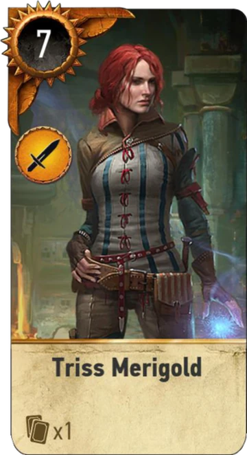

Triss Merigold
Triss Merigold to rudowłosa czarodziejka z Mariboru, zwana czasem Żurawiem z Dol Blathanna, choć bardziej znana jako Triss z Kaer Morhen, była kimś więcej niż tylko kolejną władczynią ognia. Jej los splótł się z Geraltem nie raz, nie dwa, ale wciąż na nowo, czasem cicho i ciepło, a czasem boleśnie.
Po upadku Kaer Morhen stała u boku Geralta, lecz nigdy w pełnym świetle. Gdy Biały Wilk stracił pamięć, Triss próbowała wypełnić pustkę opiekuńczością, czułością, półprawdą. Pragnęła być kimś ważnym, choć wiedziała, że cień Yennefer nie zniknie.
Towarzyszyła mu przez bitwy, spiski, zdrady. Bywała ratunkiem jak wtedy, gdy wyciągnęła go spod miecza Addy, albo gdy milczała pod torturami Nilfgaardu. Innym razem znikała, gdy potrzeba była największa. Jej uczucia były szczere, choć nie zawsze wystarczające.
W Novigradzie, już nie jako damulka z dworu, ale jako opiekunka wypędzonych i tropionych, walczyła nie różdżką, a sercem. W ciemnych zaułkach miasta była iskrą nadziei dla czarodziejów, których świat próbował wymazać. A kiedy znów spotkała Geralta – nie żądała, nie wypominała. Była.
Niepokorna, lojalna, piękna – zapisała się w opowieściach nie tylko jako ta „druga po Yennefer”, ale jako światło, które, choć słabsze, potrafiło ogrzać nawet Białego Wilka.
Zsunęła z ramion futrzaną pelerynę, zdjęła lisią czapkę, szybkim ruchem głowy rozrzuciła włosy – swoją dumę i swój znak rozpoznawczy – długie, połyskujące złotem, puszyste pukle o kolorze świeżego kasztana. [...] Piękne, długie i rozpuszczone włosy były rzadkością, wyznacznikiem pozycji, statusu, znakiem kobiety wolnej, pani samej siebie. Znakiem kobiety niezwykłej – bo „zwykłe” panny nosiły warkocze, „zwykłe” mężatki ukrywały włosy pod czepcami lub zawiciami. Panie wysokiego rodu, wliczając królowe, trefiły włosy i układały je. Wojowniczki strzygły się krótko. Tylko druidki i czarodziejki – i nierządnice – obnosiły się z naturalnymi grzywami, by podkreślić niezależność i swobodę.
- Krew elfów
Potrafię o siebie zadbać. Wierz mi
- Karta do Gwinta🃏
Charakterystyka bohatera
Triss Merigold wyróżnia się długimi, kasztanowymi włosami z połyskiem złota, choć w późniejszych etapach jej historia pokazuje ją z rudymi włosami upiętymi w kok. Jej znakiem rozpoznawczym są także duże, niebieskie oczy i rumiane policzki, nadające jej dziewczęcego uroku. Uchodzi za kobietę niezwykle zadbaną i atrakcyjną, dba o dietę, sylwetkę oraz regularnie się maluje i kąpie. Ubrania dobierała z gustem – często nosiła turkusowy kaftan z kolorowymi akcentami i dopasowane spodnie, podkreślające jej zgrabną figurę.
Triss była wykształconą i utalentowaną czarodziejką, specjalistką od magii żywiołów, teleportacji i alchemii. Choć miała ogromny potencjał, brakowało jej czasem zdecydowania i pewności siebie, co zarzucały jej inne czarodziejki, jak Yennefer czy Filippa. Mimo to z czasem pokazała odwagę i dojrzałość – szczególnie podczas dramatycznych wydarzeń w Rivii. Triss była wrażliwa, empatyczna i troskliwa wobec bliskich, choć bywała też emocjonalna i zraniona, co niekiedy popychało ją do błędów.
Triss była zakochana w Geralcie i przez krótki czas była jego kochanką. Wiedząc, jak wiele Yennefer znaczy dla wiedźmina, dopuściła się nielojalności – rozkochała go w sobie, wspierając się magią. Związek z nim nie dał jej spełnienia, a raczej przyniósł ból i poczucie winy. Pomimo braku odwzajemnionych uczuć, długo nie potrafiła o nim zapomnieć i nieustannie próbowała wrócić do jego życia. Jej zazdrość wobec Yennefer była głęboka, ale z czasem potrafiła ją przyznać. Triss to postać emocjonalna, wrażliwa i pełna sprzeczności – z jednej strony lojalna przyjaciółka, z drugiej – kobieta targana pragnieniami i żalem.

Ewolucja wyglądu postaci na przestrzeni gier
Triss od początku amnezji Geralta towarzyszyła mu w niemalże każdych podróżach. Za sprawą tego pojawiła się ona w każdej części z serii gier. Jej model na przestrzeni lat znacząco uległ pozytywnym zmianom, lepiej oddając urodę czarodziejki.